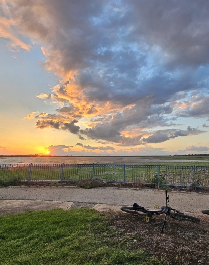
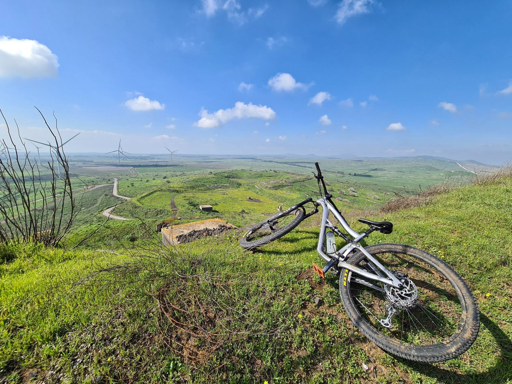

היא לא מסומנת באפליקציה. היא כן מסומנת אצלנו.
ארבע עונות, ארבע דרכים לרכוב בגולן
הגולן משתנה עם העונות — ובכל עונה הוא מספר סיפור אחר על שני גלגלים. בקיץ מחפשים את השעות הקרירות, בסתיו את האור הרך, בחורף את המים והבוץ, ובאביב את הפריחה.
כאן תמצאו ארבעה רגעים שונים של רכיבה. בוא להתארח ונראה לכם את המסלולים בהתאם לעונה.
לא רשימת מסלולים — ארבעה סיפורים של הגולן לאורך השנה. לחצו על כרטיס כדי להיכנס לסיפור.

״״כל עונה בגולן מרגישה אחרת על האופניים. תגידו לי מתי אתם מגיעים — ואני אגיד לכם איזה יום רכיבה מחכה לכם.״״
אנחנו מכירים את האזור, את השבילים ואת השינויים של העונות — ונשמח לעזור לכם לתכנן יום רכיבה שמתאים לזמן שבו הגעתם לגולן
דברו איתי בוואטסאפרגעים מארבע עונות של רכיבה. לחצו להגדלה.

כתבו לנו מתי אתם מגיעים ומה אתם מחפשים — בוקר קיצי, אור סתיו, שבילים רטובים או פריחה — ונתאים לכם יום רכיבה.